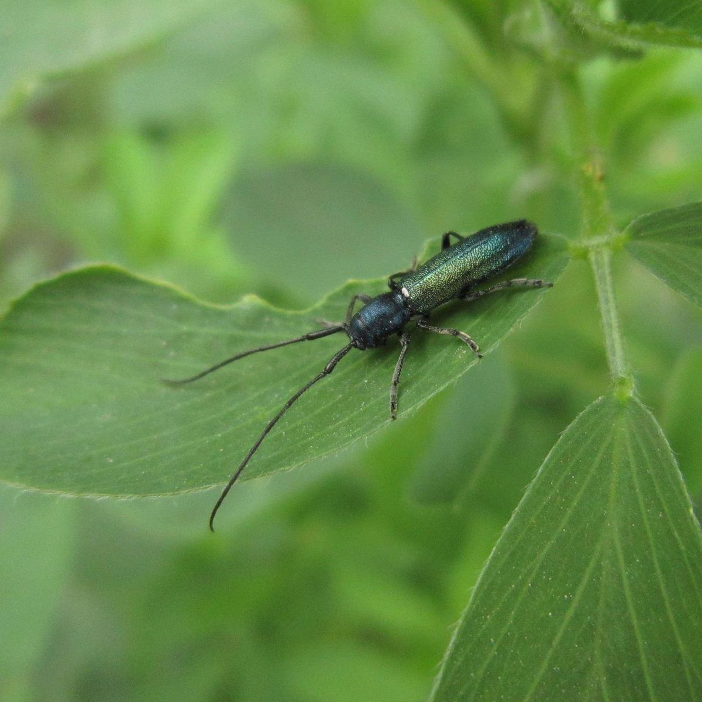

Capricorne, Vrillette & Lyctus en Corse : Identification & Traitement
Capricorne des maisons, vrillette et lyctus forment le trio des insectes xylophages les plus fréquents après le termite. Chacun cible un type de bois différent et laisse des indices distincts : identifier l'espèce oriente le traitement adapté.

Identification & risques
Capricorne des maisons
Cible les bois résineux de charpente (chevrons, pannes) : trous de sortie ovales de 6 à 10 mm et sciure fine caractéristiques.
Larve active plusieurs années dans le bois, souvent sans aucun signe visible en surface pendant longtemps.
Principal risque pour la solidité structurelle des charpentes anciennes.
Vrillette (petite & grosse)
S'attaque aussi bien aux bois secs qu'humides déjà fragilisés, résineux comme feuillus.
Trous de sortie ronds de 2 à 3 mm, souvent accompagnés de sciure visible signe d'une activité larvaire en cours.
Fréquente sur mobilier ancien, poutres et boiseries déjà affaiblies par l'humidité.
Lyctus brun
Cible exclusivement les bois feuillus riches en amidon (chêne, frêne, châtaignier) — jamais les résineux.
Trous de sortie ronds et nets de 1 à 2 mm, sciure très fine et poudreuse.
Attaque surtout le bois jeune, dans ses premières années d'utilisation, avant disparition naturelle de l'amidon.
Notre traitement professionnel
Identification
Sondage du bois & identification de l'espèce
Contrôle visuel et sondage à la pointe pour évaluer la résistance résiduelle du bois, identifier l'insecte en cause selon la taille des trous et le type de bois attaqué, et délimiter la zone infestée.
Traitement curatif
Injection & pulvérisation insecticide
Application d'un insecticide dans la masse du bois par injection et pulvérisation en surface, pour éliminer les larves présentes quel que soit l'insecte xylophage identifié.
Si nécessaire
Orientation vers le remplacement
Lorsque des pièces sont trop dégradées pour être traitées seules, nous vous orientons vers un professionnel du bâtiment pour leur remplacement, en complément du traitement biocide des bois restants.
Foire aux questions — Capricorne, vrillette & lyctus
Comment distinguer capricorne, vrillette et lyctus ?
La taille et la forme des trous de sortie orientent l'identification : ovales de 6-10 mm pour le capricorne, ronds de 2-3 mm avec sciure pour la vrillette, ronds et nets de 1-2 mm pour le lyctus. Le type de bois attaqué (résineux pour le capricorne, feuillus pour le lyctus) est aussi un indice clé.
Quelle différence entre ces xylophages et le termite ?
Contrairement au termite souterrain, ces insectes n'ont besoin d'aucun contact avec le sol ni de cordonnets de terre pour se développer : tout leur cycle se déroule dans le bois lui-même.
Quels sont les signes visibles d'une infestation ?
Des trous de sortie sur le bois, de la sciure au pied des éléments touchés, et parfois un bruit de grignotage discret dans les combles ou le mobilier en période d'activité larvaire.
Comment savoir si ma charpente est attaquée par des capricornes ou des vrillettes ?
La présence de trous de sortie ovales (capricorne) ou ronds (vrillette), l'apparition de vermoulure fine sous les poutres ou des bruits de grignotement nocturne dans le bois sont les signes les plus nets d'une attaque d'insectes xylophages.
Comment différencier l'attaque d'un capricorne de celle d'une vrillette ?
Le capricorne laisse des trous de sortie ovales de 6 à 10 mm et sa larve émet un bruit de grignotement audible. La vrillette produit des trous parfaitement ronds et plus petits (1 à 3 mm) accompagnés d'une vermoulure très fine en surface.
Ces insectes sont-ils dangereux pour l'homme ?
Non, aucun de ces trois xylophages ne pique ni ne transmet de maladie. Le risque est uniquement matériel : affaiblissement du bois de charpente, du mobilier ou des boiseries touchées.
Interventions sur l'ensemble de la Haute-Corse et de la Corse-du-Sud